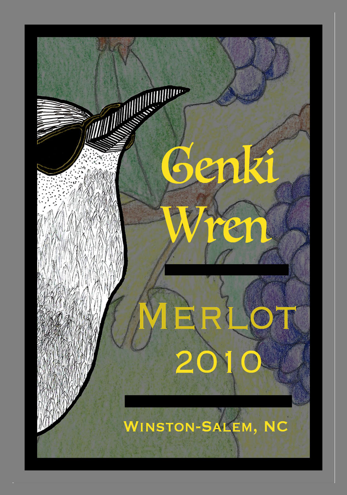
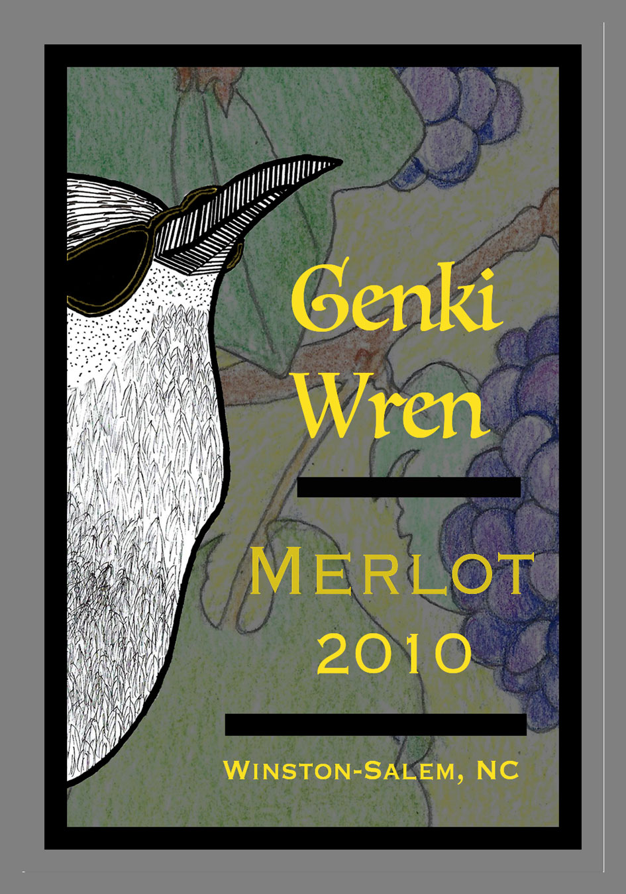

Kelly Henry
Graphic Designer
About Me
I've had always been interested in Graphic Design but sometime life just gets in the way. I've been studying now for a few years and I have really been enjoying the work. My goal is to finish my graphic design degree and freelance. I would like to make book covers my specialty.
Favorite Project: Asimov Trilogy Book Covers


The project was to create 3 bookcovers for a trilogy of books. Each cover had to relate to each other so people would know that they belong together but still different enough to set each apart.
Posters

I created several posters which included one celebrating Massimo Vignelli, the famous designer who developed the 1972 NYC subway map. The Barrowburn poster was created using found materials such as toilet paper, typography from magazines, and scrabble tiles.
Wine Bottle Labels
 

Another favorite project was creating these wine bottles labels.
Cookbook


This cookbook was a loving rememberance of my mother-in-law who made the best treats and was the best grandma to my children. These are her recipes. I used the image of her house because I love the victorian look. The color scheme used was created from the mint green house paint.
Process for Magazine Ad


I wanted to include my process for developing a magazine ad to sell indoor drones to adults. My target audience were tech savy adults looking to try drones without having to spend tons of money. I started with a mindmap, moved to quick thumbnails, then a series of more fleshed out thumbnails, and finally full size comps, with and without color.
View more Drawing for Graphic Design on my sparknote pageWork Experience
Chemist Lab Assistant
Glaxo SmithKline, June 2014 to June 2016
My main focus was creating solutions for the chemist to use in thier testing. I was also responsible for monthly validation testing of dissolution equipment and balances.
Douglas Elementary Teaching Assistant
Wake County Schools, August 2003 to June 2005
I was the assistant to the 1st grade teacher where I helped with teaching and moving the children to different activities during the day.
Control Scientist I
Glaxo SmithKline, September 1986 to August 1995
I was responsible for environmental testing and quality assurance monitoring of the Sterile Products Division.
Education
Wake Tech Community College - Raleigh, NC
AS in Graphic Design, in-process
East Carolina University - Greenville, NC
BS in Biology, 1981-1985